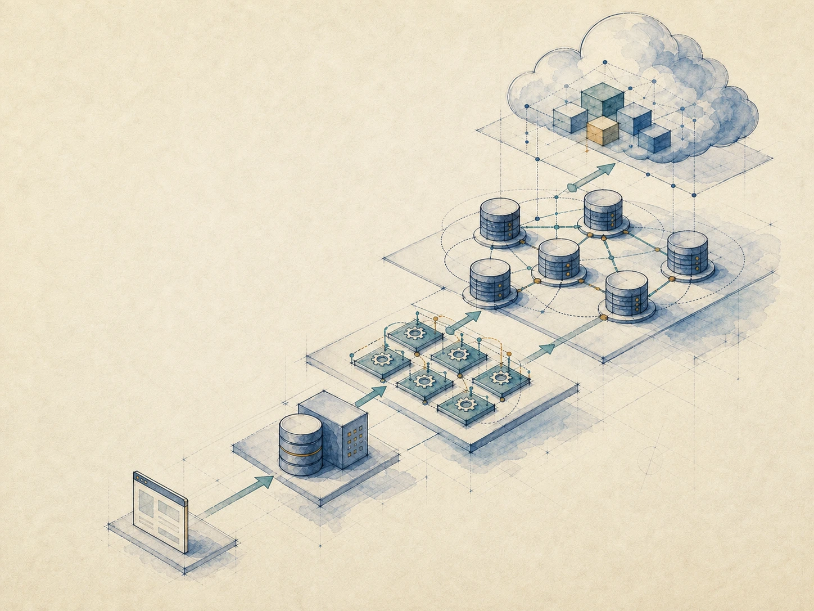
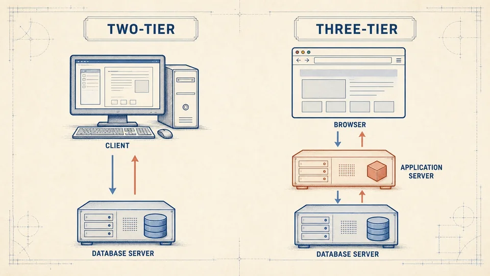

单用户
微型计算机上的数据库系统通常由一个用户使用，如 SQLite

部署、通信、处理和服务方式
 VER. 2608.4
Built with impress.js
VER. 2608.4
Built with impress.js
理解数据库系统的部署位置、通信方式、任务处理、数据节点、服务交付
三节都讨论“结构”，但关注的对象不同
| 章节 | 核心问题 | 关键对象 |
|---|---|---|
| 1.3 | 数据库内部怎样分层描述 | 外模式、模式、内模式和两级映像 |
| 1.4 | 系统如何运行、谁承担职责 | 数据、DBMS、应用、平台和人员 |
| 1.5 | 体系结构怎样部署、通信和协作 | 集中、客户-服务器、并行、分布和云 |
注意本节描述的维度，一个具体系统可以同时具有多种体系结构
该如何理解“结构”这个词？
先找系统改变的维度，再判断哪种体系结构描述适用
| 判断角度 | 体系结构描述 |
|---|---|
| 组件位置与通信 | 集中：主要组件在同一机器上；客户端/服务器：功能分置 |
| 任务处理方式 | 并行：一个任务交给多个处理单元共同处理 |
| 数据位置与节点自治 | 分布式：数据跨多个网络节点，节点可以自治 |
| 能力交付方式 | 云数据库：数据库能力通过网络服务提供 |
比较体系结构时还要同时检查能力与成本
应用、DBMS 和数据库集中在同一台计算机内，可被多个终端共享
微型计算机上的数据库系统通常由一个用户使用，如 SQLite
小型机或大型机上的数据库系统可以让多个终端共享同一个系统
关键看应用、DBMS 和数据库是否分别放置在不同的物理计算机上
集中式减少跨机器通信，但资源、扩展能力和故障影响也更集中
客户端应用通过网络向服务器上的 DBMS 请求数据
请求路径：客户端应用 → 服务器上的 DBMS → 服务器上的数据库
返回路径：数据库 → 服务器上的 DBMS → 网络 → 客户端应用
提供用户界面和部分业务数据处理流程，需要数据时发出请求；桌面应用、移动应用或浏览器都是客户端
通过网络接收请求，处理数据库访问，把用户需要的数据通过网络链路返回给客户端
把应用和数据库分到客户端与服务器，但增加网络、认证和连接管理负担
浏览器可以视为一种客户端的使用方式
提供统一的用户界面，发出业务请求
运行应用系统或模块，承接业务逻辑
运行 DBMS 和数据库，处理数据访问、事务和控制
三层部署结构和三级模式结构都是“三层”，但注意区别
客户端是请求方，浏览器是一种客户端运行环境

C/S 交互直接、客户端能力更强，但客户端更新与连接安全管理任务更重；B/S 便于统一部署和维护，但增加应用负担、网络往返和复杂性
两层结构让客户端直接连接数据库，三层结构让应用服务器承担部分业务处理
| 结构 | 请求路径 | 返回路径 | 主要职责 |
|---|---|---|---|
| 两层 | Client → DB Server | DBS → C | 客户端直接请求数据服务 |
| 三层 | Client → App Server → DB Server | DBS → AS → C | 应用服务器承接业务逻辑 |
C/S 不一定都是两层，B/S 也不一定都是三层
是否架设单独的应用服务器，取决于业务复杂程度和访问量
一个查询可以拆给多个处理单元，再汇总结果
| 结构 | 资源如何共享 |
|---|---|
| 共享内存型 | 多个处理器共享同一片内存 |
| 共享磁盘型 | 多个处理器共享磁盘，协同访问数据 |
| 非共享型 | 各处理单元拥有自己的处理器、内存和磁盘，通过系统协作 |
| 混合型 | 组合不同共享方式，按系统需要组织处理资源 |
并行使任务可以同时处理，带来性能、可用性和扩展性，但需要协调成本
数据跨多个网络节点，用户仍可将其看作一个逻辑整体
| 观察点 | 具体含义 |
|---|---|
| 逻辑整体 | 多个节点上的数据在逻辑上仍作为一个数据库 |
| 场地自治 | 节点可以独立处理本地数据库 |
| 局部应用 | 独立访问和处理本地节点的数据 |
| 全局应用 | 通过网络访问和处理多个节点的数据 |
数据物理跨网络节点并允许节点自治
云数据库在云环境中部署，通过网络提供数据库能力
考试周选课高峰：调用云数据库服务 → 按需获得资源 → 返回结果
用户获得存储、更新、查询处理和事务管理，不必自己部署全部基础设施
云环境可以根据负载变化分配计算资源和存储资源
云服务分担部分基础设施运维；用户仍需管理数据、权限、安全与成本
云数据库是能力视角，底层依然使用并行/分布式技术
改变了什么？该如何命名？
| 体系结构 | 核心变化 | 获得的能力 | 新增问题 |
|---|---|---|---|
| 并行 | 一个任务使用多个处理单元 | 提高适合查询的处理速度 | 拆分、汇总和资源竞争 |
| 分布式 | 数据和处理跨多个网络节点，节点可以自治 | 就近处理、扩展性和可用性 | 网络故障、一致性和节点管理 |
| 云数据库 | 数据库能力按网络服务提供 | 按需资源和减少部分基础设施运维 | 服务依赖、隐私、成本和管理责任 |
并行、分布式、云三种体系并非严格隔离
写出变化维度、描述和新增成本
判断依据包括变化维度、体系结构描述和新增成本
同一系统可能同时具有多种体系结构描述
三个校区分别维护本地学生和成绩数据，教务处需要跨校区汇总；用户通过浏览器访问；考试周访问较集中。该自建服务器还是采购云数据库？
选择时要说明业务范围、数据位置、负载变化、网络条件和管理能力
先提出正确的问题，再找答案
| 章节 | 要点 | 典型问题 | 相关但不同的内容 |
|---|---|---|---|
| 1.3 | 数据库内部抽象 | 哪一级模式发生变化 | 组件部署位置 |
| 1.4 | 系统运行整体 | 谁和什么共同支撑系统 | 网络节点协作方式 |
| 1.5 | 外部体系结构 | 应用、DBMS、数据库如何部署 | 分布式实现算法、分片和具体云产品 |
五类体系结构不是升级路线，具体系统可以同时使用多种技术
组件位置、请求路径和协作负担共同决定体系结构判断
集中式把主要组件放在一台计算机
客户-服务器把应用与数据库服务分开
并行把一个任务交给多个处理单元
分布式让多个节点处理本地或全局数据
云数据库以网络服务提供存储、查询和事务能力
用户仍需处理安全、隐私、成本和责任
根据组件位置、任务处理方式、数据节点和服务边界，再判断体系结构描述